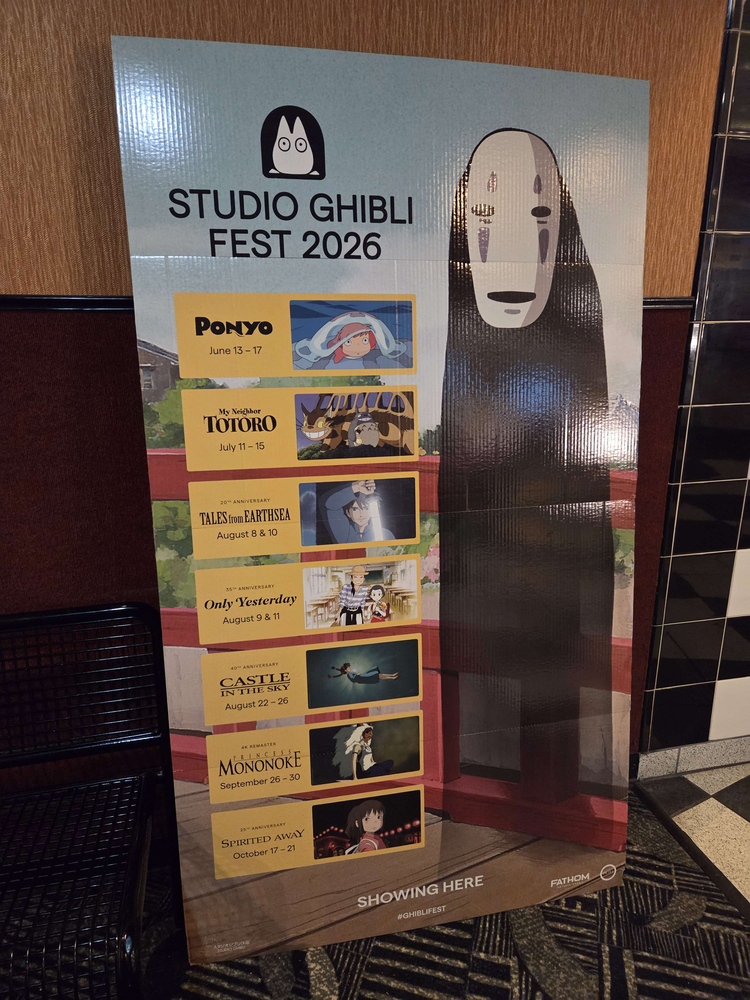
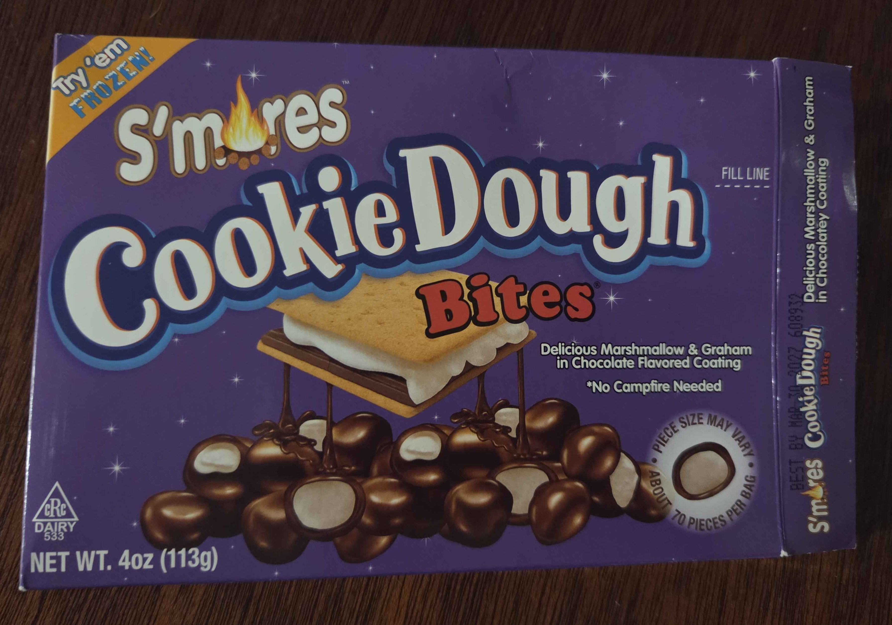
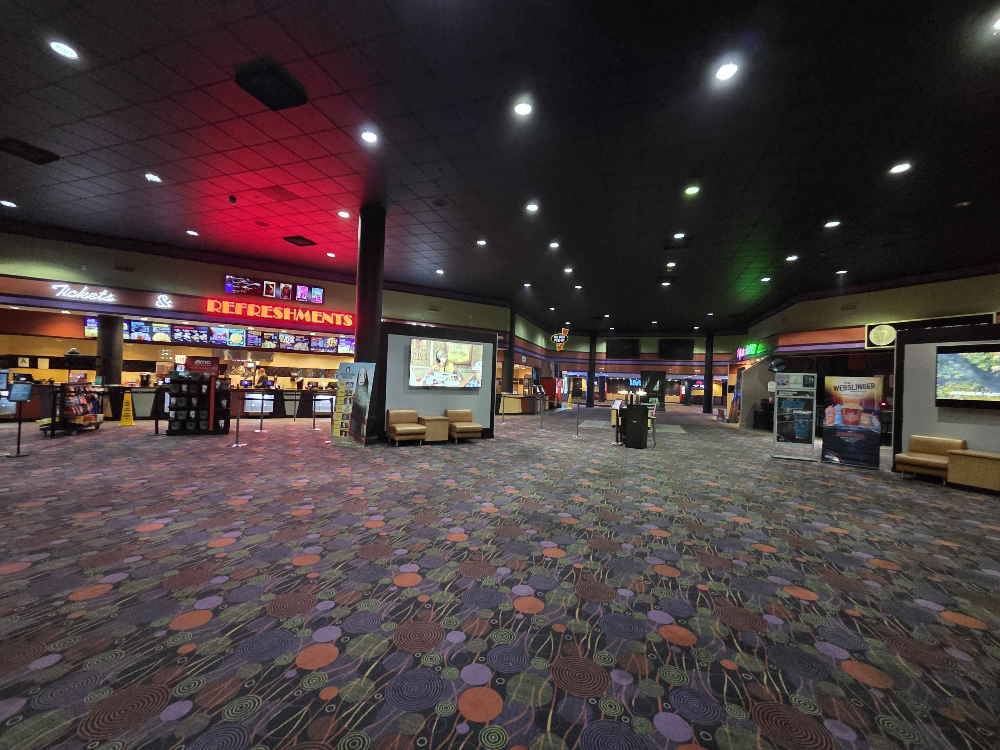
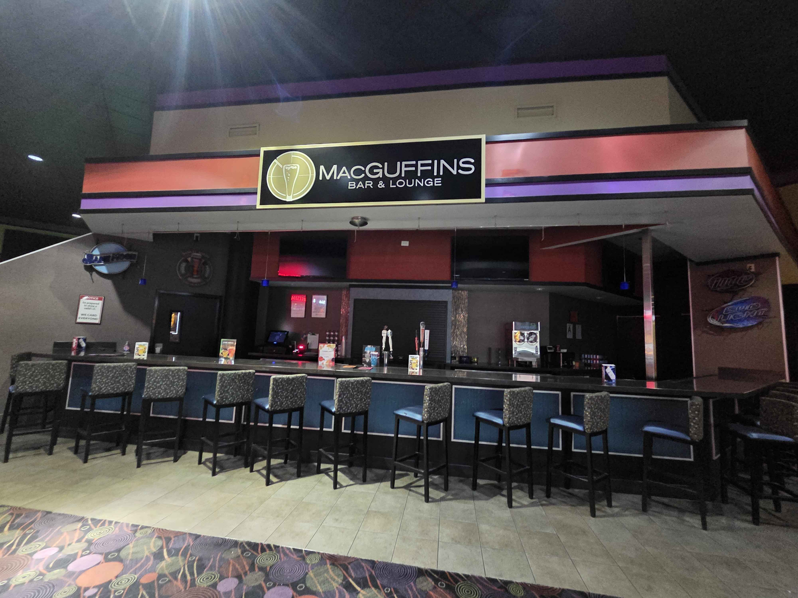

I decided to go see Only Yesterday as part of Studio Ghibli Fest 2026, since I was reminded of it when I went to see Supergirl earlier in the summer, and also because I saw Kiki’s Delivery Service as part of the 2023 fest. When my girlfriend and I saw Supergirl, we saw it in a Cinemark theater, but I had mistakenly thought it was an AMC theater, which is where I bought the tickets to see Only Yesterday. When purchasing the tickets, I planned to see Only Yesterday on a Tuesday for the 50% off discount that both AMC and Cinemark do, but Studio Ghibli films weren't included in that deal. Not like that mattered anyway, since Only Yesterday was being shown only on August 9th and 11th, and I was making these plans on the 9th.

Snack Prep at Dollar Tree
Since my girlfriend was coming straight from work, I was going to meet her at the theater. I decided to leave the apartment a little early to stop by the Dollar Tree to buy some snacks to bring into the movie (as one does, since concession prices are ludicrous). I bought some Reeses for her, since those are one of her favorite candies, and I was going to buy something basic like M&Ms for myself, until these S’mores Cookie Dough Bites caught my eye. S’mores are one of my favorite flavors, so I knew I had to try them. I ended up not eating them during the movie itself, but I had some when I got home. I put them in the freezer for a few minutes like the package suggested, and tried a handful. They didn’t really taste like s’mores, and the chocolate taste was just slightly off - enough to notice it, but not enough to ruin the candy. They weren’t so bad that I won’t finish them, but I won’t be buying them again.

AMC Stonybrook 20
Since I thought the theater I saw Supergirl at was an AMC (but was actually Cinemark), I was shocked when I pulled into the parking lot. I was even more shocked when I walked in, as the place looked abandoned. There were barely 2 people at the concessions stand, no one was checking for tickets, the bar was closed, the lights felt dimmed (due to the black ceiling), and there were hardly any customers in the lobby. I got to the theater 5 minutes before 7, and texted my girlfriend to ask where she was. As I was waiting for her to reply, I looked up AMC theaters near me and saw a Reddit thread of people discussing AMC Stonybrook 20 and how it had gone downhill, compared to other theaters in the area and to its glory days. When my girlfriend replied she was at Cinemark, I told her that I was at AMC, and since I had brought the tickets in advance, she drove to meet me. By the time she arrived and we walked into the auditorium, it was already 7:15pm.


Only Yesterday Thoughts
Since we walked in around 15 minutes late, the first scene we saw was the family trying pineapple. From there, the movie then showed adult Taeko boarding the train to visit her in-laws in the countryside, and it took me a bit to understand how the movie was structured (switching between current time and Taeko’s flashbacks) and that 10-year-old Taeko and adult Taeko were the same person. It didn’t help that 10-year-old Taeko and other children seemed to interact with the environments of the present day, which made me think they were separate characters (which was a small nitpick I had with the movie). This happened around the beginning of the movie when the children were running down the train’s hallway when Taeko tried to sleep, and at the end when they held up the bus that Taeko boarded when she decided to stay in the countryside (I think there were a couple more times but these were the two scenes I remembered).
Speaking of the flashbacks, I wasn’t the biggest fan of them. I understand what they did for the movie (as they showcased the “why” of whatever Taeko was thinking or talking about at that time), but I was more invested in adult Taeko’s point of view and way of thinking. I think some of the scenes reminded me of things I did as a kid that I cringe about (which was their point), so because of that association I preferred seeing adult Taeko’s scenes.
Something I didn’t understand near the end of the film was Taeko feeling guilty and sorrowful for the pain she caused Abe. While she hated him, she didn’t make that known - she refused to talk about him behind his back and always treated him with kindness and respect. However, he refused to shake her hand during his last day of class as he said goodbye to all of the other students. Toshio then flips the context and insinuates that Abe may have had a crush on her (while Toshio is indirectly hinting towards his crush on her), and Taeko initially pushes back, before letting the idea sit. While I understand why Abe was brought up in context to the plot, I still don’t get Taeko’s comment about feeling sorry for the pain she caused him.
Unfortunately, when I looked up the movie in advance to see if I would’ve been interested in seeing it, I got the ending spoiled for me. However, even though I already knew what was going to happen in the end, the ending was still cute to watch unfold, to watch Taeko’s thoughts and decisions about wanting to live in the countryside develop in real time. While it wasn’t my favorite Studio Ghibli film, it was a good movie and one I may rewatch eventually.
Something that surprised me after the credits rolled was the post-film bonus featurette with the English Dub team. Some of the quotes from the team that stuck with me were “You never stop growing” and “When you watch it in 10 years, it will be a different movie because you will be a different person.” The latter quote really stuck with me because it reminded me that while we may be completely different people at different stages of our lives, all those thoughts, actions, and experiences come back together to form who we are now - that there’s something beautiful in intentionally knowing how different someone can be throughout their entire life and yet still be the same person throughout all of that.